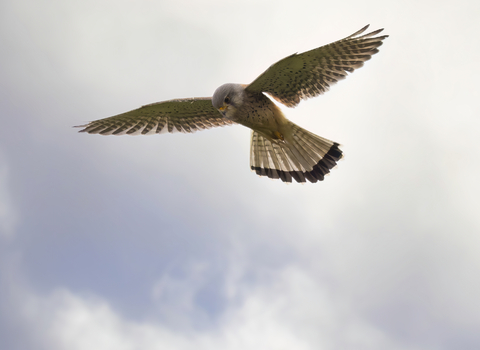
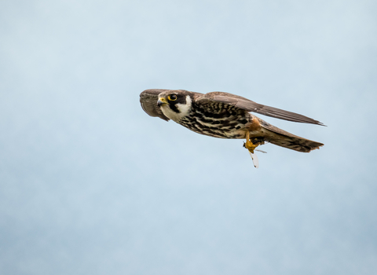
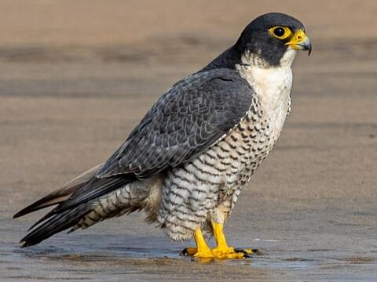
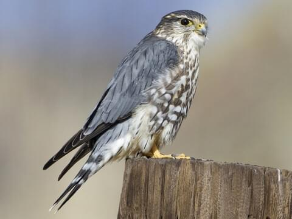

The common kestrel is quite a remarkable bird with the ability to hover in the air! they do this to search for prey and when they find it, they hover over it ad dive to enjoy their meal.
| Wingspan | Lifespan | Weight | Number of Breeding Pairs |
|---|---|---|---|
| 65-82cm | 4 years | 180 grams | 31,000-46,000 |
The kestrel is an extremely widespread bird and is possible to see anywhere in the uk, even cities! However, RSPB Rye Meads is arguably one of the best ,as its has kestrels nesting there.

They hobby is only in the uk from april to august, as they are a summmer bird. They are extremely mobile in the air and have quick reactions so they can catch tiny dragonflies.
| Wingspan | Lifespan | Weight | Number of breeding Pairs |
|---|---|---|---|
| 70-90cm | 5 years | 130-340 grams | 2,000-3,000 |
The hobby is actually a wetland bird, as they hunt dragonflys. Most wetland reserves are great, in particular RSPB Capel Fleet and RSPB Ham Wall.

The Peregrine falcon is the fastest bird in the world. They can reach to speeds of 300mph. They have an intresting conservation story. During world war 2, messenger pigeons were used to deliver messages. However, peregrines feen on pigeon so the army started to shoot them down. Since then, they bounced back and are thriving now.
| Wingspan | Lifespan | Weight | Number of breeding pairs |
|---|---|---|---|
| 74-120cm | 6-10 years | 0.6-1.3kg | 1,400-1,800 |
Peregrines are quite common in cities as they hunt feral pigeons and rock doves, and they nest in a lot of cathedrals and high buildings. However best reserves include RSPB Capel Fleet and RSPB Greylake.

The Melin is the smallest bird of prey in the uk. They are from iceland, but they come to the uk in winter in search for a warmer climate.
| Wingspan | Lifespan | Weight | Number of breeding pairs |
|---|---|---|---|
| 50-69cm | 3 years | 125-300 grams | 900-1,500 |
Merlins like open, treeless landscapes, like moorlands, heathlands, and costal areas. RSPB Capel Fleet and Emley National Nature Resere are good places.